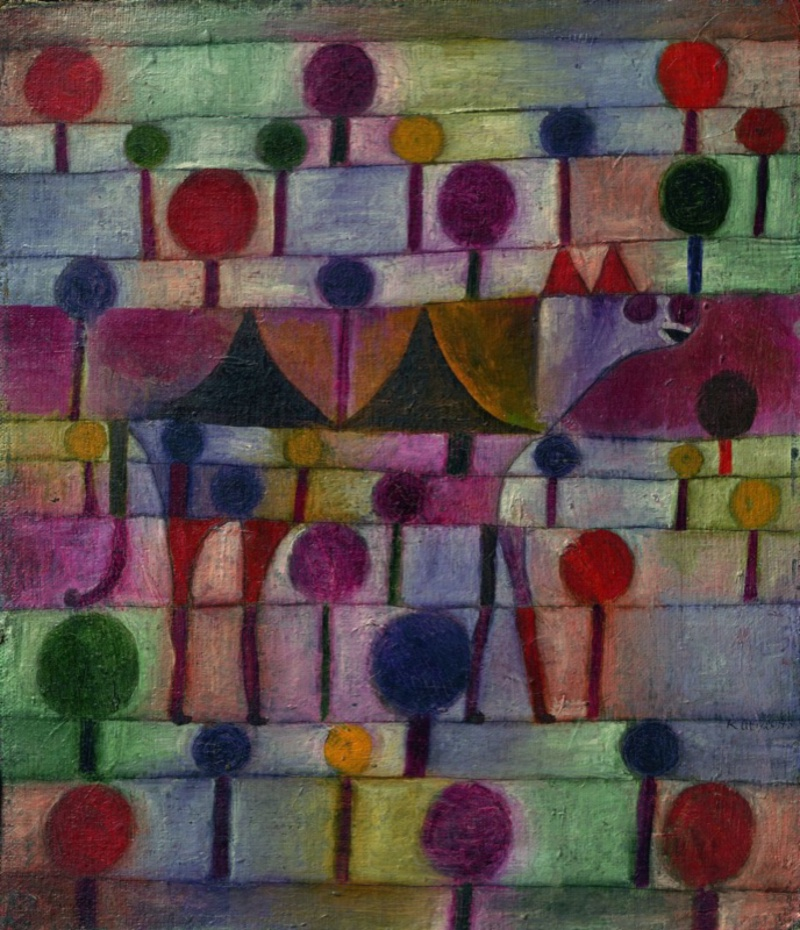

© Paul Klee - Kunstsammlung Nordrhein-Westfalen
Here we are with Camel K 2.8.0. We are please to announce the general availability of a new Camel K version. There are a few new exciting features we want to share within this release.
Git branch/tag/commit
In version 2.7.0 we announced the possibility to build a Camel application directly from Git source. We have worked in this release to include the possibility to specify a branch, tag or generically a commit to the configuration. This should improve your GitOps experience, or, more in general the deployment of Camel in Kubernetes via Git operations.
Init and sidecar containers
From this version onward you’ll be able to configure directly both init containers and side containers. This feature was available previously but it was a bit difficult to configure. With the new init-containers trait, you will be able to easily configure this important aspect of your Camel applications on Kubernetes.
Service ports
Until now there was limited possibility for the integrations to expose a port, beside the managed HTTP port. Within version 2.8.0 we’re introducing a new configuration on the service trait, ports which allow you to expose any generic port (even UDP ports, if needed) via a regular Kubernetes Service.
JVM agents
Another limitation we suffered was the fact we did not have a direct way to tell the Camel application to run a given JVM agent. In 2.8.0 we’re introducing the agent trait. This trait is in charge to get the agent (via a regular jar dependency) and make it available to your runtime application. You only need to configure it according to each agent specification. This is a great addition that will simplify the deployment and usage of the agents for your applications in the cloud.
Take, as an example the Opentelemetry agent. From now on, you just need to run your application in the following fashion:
apiVersion: camel.apache.org/v1
kind: Integration
...
spec:
...
traits:
jvm:
agent: otel;https://github.com/open-telemetry/opentelemetry-java-instrumentation/releases/latest/download/opentelemetry-javaagent.jar
options:
- -Dotel.exporter.otlp.endpoint=http://otel-svc:4317
- -Dotel.metrics.exporter=none
...
Your application will be instrumented and executed with the agent you’ve configured. Bonus point: you can add as much as agents you need!
Pipe dependencies
This one is some long time due feature. From now on you will be able to configure dependencies directly in the Pipe specification in the similar way you used to do for Integrations. This is very needed when, for instance, you need to provide an external JDBC driver to your Pipe.
Deprecations
We’re active on the deprecation side as well, in order to keep a clean codebase that can be easier to evolve and maintain. In this version we’re deprecating the pod trait (mainly used for init and side containers, now, available through init-container trait). We’re also deprecating jolokia trait, which agent can be now configured via jvm.agents property trait.
Removals
It’s also the turn of some removal from the code base. The spectrum publishing strategy (deprecate already some time ago) has been removed and won’t be working any longer. Same for kamel install/uninstall subcommands.
Main dependencies
The operator was built with Golang 1.24 and the Kubernetes API is aligned with version 1.33. We haven’t changed the Camel K Runtime LTS version (3.15.3, based on Camel 4.8.5): this is for backward compatibility reasons. As mentioned already in version 2.7 as well, we’re pushing to the usage of plain-quarkus provider, which would allow you to use any released Camel Quarkus version.
Full release notes
Those were the most interesting features we have delivered in Camel K 2.8.0. We have more minor things, documentation and dependency updates that you can check in the 2.8.0 release notes.
Stats
Here some stats that may be useful for development team to track the health of the project:
- Github project stars: 890 (+1 %)
- Docker pulls over time: 2391836 (+1,2 %)
- Unit test coverage: 51.1 % (+3,8 %)
Thanks
Thanks a lot to our contributors and the hard work happening in the community. Feel free to provide any feedback or comment using the Apache Camel available channels.